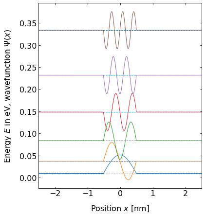
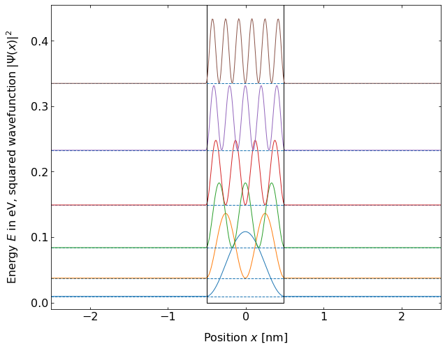
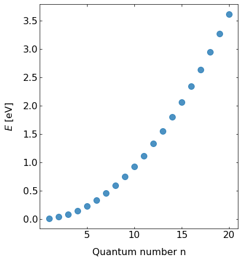
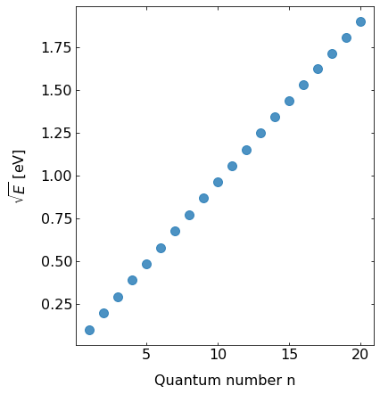

This page was generated from `/home/lectures/exp3/source/notebooks/L27_AMA/L27_potential_well.ipynb`_.

A potential well¶
… with infinite high walls¶
Now we want to discuss the case that a particle is only allowed to be located within a defined space. This case can be constract by means of a potial well like
Because the potential energy outside the poptential well is infinite, the penetration depth of the matter wave vanishes appraoches 0. Thus, we have “a particle in a box”. Within teh region \(0 \le < \le a\) the potential energy is defined as \(0\), which is why we can state stationary Schrödinger equation as discussed in the previous case of a potential barrier,
and the the solution for the position-dependent amplitude \(\psi \left( x \right)\) of the stationary Schrödinger equation
Because the potential energy outside the box approaches \(\infty\) and thus the propability density of our matter wave approaches \(0\) we state the boundary conditions
and obtain
On the basis of the first condition ($B = -A) we refine the wavefunction
and on the basis of the second condition (\(2 i A \sin \left( k a \right) = 0\)) we obtain
We refine the wave function further resulting in
with \(C = 2 i A\). Latest equation represents a standing wave with the allowed wavenumbers and wavelength being
respectively.
 
Fig.: (left) Wave functions :math:`psi_{mathrm{n}}` positioned at the height corresponding to the energy eigenvalue :math:`E_{mathrm{n}}`. (right) The according probability densities as the squared wave functions. The postential is :math:`0` for :math:`-0.5 , mathrm{nm} le x le 0.5, mathrm{nm}`, otherwise it is set :math:`10^4`
As potential values the wavenumber and wavelength can adopt are restricted now in accorded to the boundary condition, we are wondering how the energy of the poarticle might be affect. For the energy we can write
and we see that our particle in the box cannot adopt any arbitray energy. In order to remain at a stationary state the particle can adopt only specific, descrete values of energy. Thus, the energy eigenvalues or energy principal values are quantized. We can state the energy \(E_{\mathrm{m}}\) in dependence of \(n\) as
 
Fig.: (left) The energy eigenvalus in dependence of the quantum number :math:`n`. (right) The square root of the energy eigenvalues from the left panel. The postential is :math:`0` for :math:`-0.5 le x le 0.5`, otherwise it is set :math:`10^4`
It is evident that the energy eigenvalues rise with the square of the quantum number (\(E_{\mathrm{n}} \propto n^2\)) and with the square of the inverse width of our potential well (\(E_{\mathrm{n}} \propto 1/a^2\)). Furthermore, the minimum energy \(E_{\mathrm{1}}\) is non-zero, its is rather
Only for aninfinite width of the potential well \(E_{\mathrm{1}}\) approaches \(0\). The non-zero minimum energy is a consequence of Heisenbger’s uncertanty relation. If we restrict the particle in position like \(\Delta x = a\), it follows for the momentum \(p \ge \Delta p \ge h/2\) which leads to \(k_{\mathrm{min}} = p_{\mathrm{min}}/\hbar = \pi/a\) and \(\lambda_{\mathrm{max}} = 2a\). If we use \(p_{\mathrm{min}}\) and calculate the minimum energy like \(E_{\mathrm{min}} = p^2_{\mathrm{min}} / \left( 2m \right)\) we obtain \(E_{\mathrm{min}} = E_{\mathrm{1}}\).
… with infinite high walls¶
If teh walls of the potential well are not of infinit height, the wave function might penetrate into the walls (\(x<0\) and \(x>a\)) and decay there exponentially (\(\propto \mathrm{e}^{-2 \alpha x}\)). The wave functions are altered compared to the case with infinite high walls, because the boundary conditions in the previous form \(\psi \left( x \le 0 \right) = 0\) and \(\psi \left( x \ge a \right) = 0\) are no longer valied. The less the relative energy \(\left( E_{\mathrm{n}} - E_0\right)/E_0\) the more pronounced the deviation from the infinitely deep potential well.
Because the wavefunction is able to intrude into the walls, the position uncertainty \(\Delta x\) is increased. Thus, the momentum uncertainty is increased compared to the previous case and the energy eigenvalues \(E_{\mathrm{n}}\) are reduced.
In oder to resolve the eigenstates, we state the general solution for teh wave functions in teh regions as follows:
with
with \(\alpha = \sqrt{2m\left( E_0-E \right)}/\hbar\). Since the wave function has to normalizable (in order to bear a reasonable physical meaning) we have to set \(B_{-1} = 0\) as well as \(A_{+1} = 0\). Furthermore, we redefine \(\psi_0\) resulting in
where \(A_{0}^{\prime} = A_0 + B_0\) and \(B_{0}^{\prime} = i \left( A_0 - B_0 \right)\).
If we now apply the boundary conditions at \(x = 0\), namely
we get
respectively. From the boundary conditions at \(x = a\), namely
we get
If we divide the last equation by the second last and make use of \(B_{0}^{\prime} / A_{0}^{\prime} = \alpha / k\) from the boundary \(x = 0\), we derive the transient equation
which has the two solutions for \(\alpha\)
On the basis of this solutions and the relations \(\alpha = \sqrt{ 2 m \left(E_0 -E \right)} /\hbar\) and \(k = \sqrt{2 m E} /\hbar\) we can calculate conditions for the energy eigenvalues \(E_{\mathrm{+}}\) and \(E_{\mathrm{-}}\) and the solutions for \(\alpha_{+}\) and \(\alpha{-}\) as follows
These solutions for the energy eigenvalues \(E_{+/-}\) correspond to the symmetric and antisymmetric wavefunctions
In the case of an infinite deep potential well (\(E_0 \longrightarrow\)} the tangens and cotanges functions approach \(\infty\). Then, we obtain the identical conditions for standing waves as dicussed on the above example of “a particle in a box”..